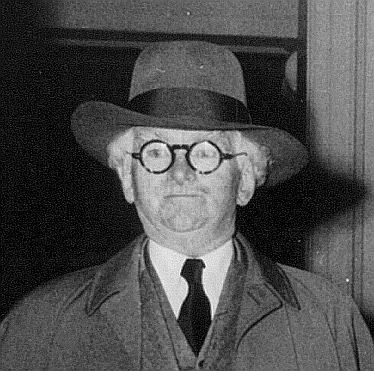

Prelude to the Battle
The Battle of Athens is an interesting historical event that took place in a small town in Tennessee. To understand why it took place you have to go back to the 1920s and 1930s. During this time a large portion of Tennessee fell under the influence of the "Crump Politcal Machine." In 1936 this politcal machine expanded to McMinn county where Crumps canidate, Paul Cantrell ran as the democratic candate for sheriff, winning this election and being relected in 1938 and 1940, afterwards becoming a state senator from 1942 to 1944 with his deputy becoming sheriff. During this time, McMinn county and Athens struggled with extreme corruption, between 1936 and 1946 the police handed out $300,000 dollars worth of fake fines, electoral fraud was common with voter intimidation and deceased peoples names showing up on votes. Gambling and bootlegging was allowed as long as law enforcement got it's cut and even ex-convicts were deputized. Finally, even schools and the newspaper were under their control, hopefully this shows you just how deep the corruption in the country ran.
You might notice that during a good portion of all of this corruption and scandal, World War 2 was going on. A good majority of the men in McMinn county we're off fighting in the war and despite knowing of and hearing about all the issues, couldn't do anything to help while they were deployed. Post-War, McMinn county had 3,000 returning veterans which represented 10% of the county population and despite being veterans, they were still targeted and harassed by law enforcement. During this time the "GI Non-Partisan League" was formed by many of the veterans to run against Paul Cantrell who was again running for sheriff. The veterans put up Knox Henry as their canidate and had 30 men around to make sure the voting process went okay, although they we're facing 200 deputies hired the current Sheriff, Pat Mansfield.